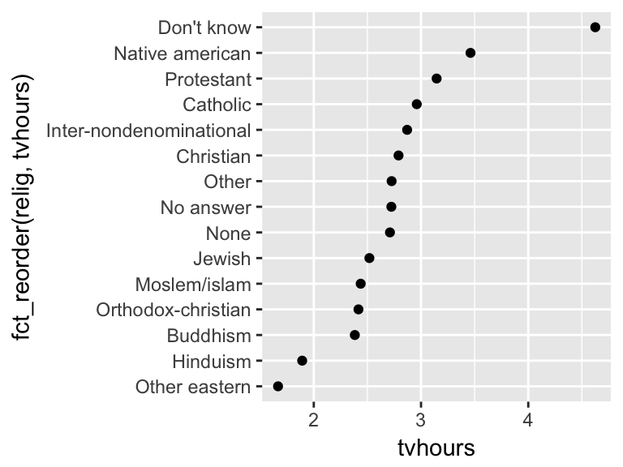
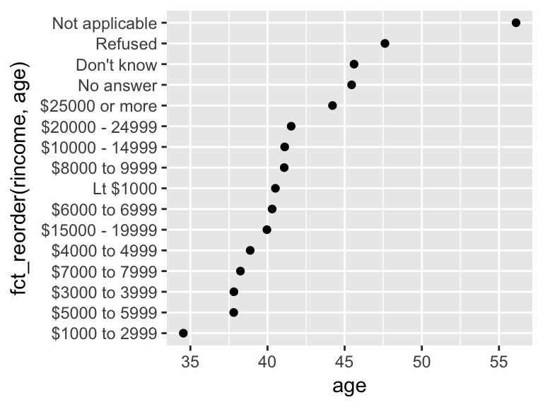

Introduction to the tidyverse: transformation with strings, dates, factors
Christopher Skovron
Northwestern University
July 18, 2018
Work with strings: stringr
Goals
- Introduce you to how
stringrworks - Set you up to get more out of it by learning regular expressions
library(tidyverse)## Warning: package 'tibble' was built under R version 3.4.3## Warning: package 'tidyr' was built under R version 3.4.3## Warning: package 'stringr' was built under R version 3.4.3library(stringr)String basics
You can create strings with either single quotes or double quotes. Unlike other languages, there is no difference in behaviour. I recommend always using ", unless you want to create a string that contains multiple ".
string1 <- "This is a string"
string2 <- 'If I want to include a "quote" inside a string, I use single quotes'String basics
If you forget to close a quote, you’ll see +, the continuation character:
> "This is a string without a closing quote
+
+
+ HELP I'M STUCKIf this happen to you, press Escape and try again!
String basics
To include a literal single or double quote in a string you can use \ to “escape” it:
double_quote <- "\"" # or '"'
single_quote <- '\'' # or "'"That means if you want to include a literal backslash, you’ll need to double it up: "\\".
String basics
Beware that the printed representation of a string is not the same as string itself, because the printed representation shows the escapes. To see the raw contents of the string, use writeLines():
x <- c("\"", "\\")
x## [1] "\"" "\\"writeLines(x)## "
## \String basics
There are a handful of other special characters. The most common are "\n", newline, and "\t", tab, but you can see the complete list by requesting help on ": ?'"', or ?"'". You’ll also sometimes see strings like "\u00b5", this is a way of writing non-English characters that works on all platforms:
x <- "\u00b5"
x## [1] "µ"String basics
Multiple strings are often stored in a character vector, which you can create with c():
c("one", "two", "three")## [1] "one" "two" "three"String length
Base R contains many functions to work with strings but we’ll avoid them because they can be inconsistent, which makes them hard to remember. Instead we’ll use functions from stringr. These have more intuitive names, and all start with str_. For example, str_length() tells you the number of characters in a string:
str_length(c("a", "R for data science", NA))## [1] 1 18 NACombining strings
To combine two or more strings, use str_c():
str_c("x", "y")## [1] "xy"str_c("x", "y", "z")## [1] "xyz"Combining strings
Use the sep argument to control how they’re separated:
str_c("x", "y", sep = ", ")## [1] "x, y"Combining strings
Like most other functions in R, missing values are contagious. If you want them to print as "NA", use str_replace_na():
x <- c("abc", NA)
str_c("|-", x, "-|")## [1] "|-abc-|" NAstr_c("|-", str_replace_na(x), "-|")## [1] "|-abc-|" "|-NA-|"Combining strings
Objects of length 0 are silently dropped. This is particularly useful in conjunction with if:
name <- "Hadley"
time_of_day <- "morning"
birthday <- FALSE
str_c(
"Good ", time_of_day, " ", name,
if (birthday) " and HAPPY BIRTHDAY",
"."
)## [1] "Good morning Hadley."Combining strings
To collapse a vector of strings into a single string, use collapse:
str_c(c("x", "y", "z"), collapse = ", ")## [1] "x, y, z"Subsetting strings
You can extract parts of a string using str_sub(). As well as the string, str_sub() takes start and end arguments which give the (inclusive) position of the substring:
x <- c("Apple", "Banana", "Pear")
str_sub(x, 1, 3)## [1] "App" "Ban" "Pea"# negative numbers count backwards from end
str_sub(x, -3, -1)## [1] "ple" "ana" "ear"Combining strings
Note that str_sub() won’t fail if the string is too short: it will just return as much as possible:
str_sub("a", 1, 5)## [1] "a"You can also use the assignment form of str_sub() to modify strings:
str_sub(x, 1, 1) <- str_to_lower(str_sub(x, 1, 1))
x## [1] "apple" "banana" "pear"Locales
If you work outside of US English a lot, check out the book’s section on setting locales.
Exercise
- Write a function that turns (e.g.) a vector
c("a", "b", "c")into the stringa, b, and c. Think carefully about what it should do if given a vector of length 0, 1, or 2.
Matching patterns with regular expressions
- Regexps are a very terse language that allow you to describe patterns in strings.
- Learning them will take more time than we have today
- Study up on your own; they take a little while to get your head around, but once you understand them, you’ll find them extremely useful.
Detect matches
To determine if a character vector matches a pattern, use str_detect(). It returns a logical vector the same length as the input:
x <- c("apple", "banana", "pear")
str_detect(x, "e")## [1] TRUE FALSE TRUEDetect matches
Remember that when you use a logical vector in a numeric context, FALSE becomes 0 and TRUE becomes 1. That makes sum() and mean() useful if you want to answer questions about matches across a larger vector:
# How many common words start with t?
sum(str_detect(words, "^t"))## [1] 65# What proportion of common words end with a vowel?
mean(str_detect(words, "[aeiou]$"))## [1] 0.2765306Detect matches
When you have complex logical conditions (e.g. match a or b but not c unless d) it’s often easier to combine multiple str_detect() calls with logical operators, rather than trying to create a single regular expression. For example, here are two ways to find all words that don’t contain any vowels:
# Find all words containing at least one vowel, and negate
no_vowels_1 <- !str_detect(words, "[aeiou]")
# Find all words consisting only of consonants (non-vowels)
no_vowels_2 <- str_detect(words, "^[^aeiou]+$")
identical(no_vowels_1, no_vowels_2)## [1] TRUEDetect matches
A common use of str_detect() is to select the elements that match a pattern. You can do this with logical subsetting, or the convenient str_subset() wrapper:
words[str_detect(words, "x$")]## [1] "box" "sex" "six" "tax"str_subset(words, "x$")## [1] "box" "sex" "six" "tax"Detect matches
Typically, however, your strings will be one column of a data frame, and you’ll want to use filter instead:
df <- tibble(
word = words,
i = seq_along(word)
)
df %>%
filter(str_detect(words, "x$"))## Warning: package 'bindrcpp' was built under R version 3.4.4## # A tibble: 4 x 2
## word i
## <chr> <int>
## 1 box 108
## 2 sex 747
## 3 six 772
## 4 tax 841Replacing matches
str_replace() and str_replace_all() allow you to replace matches with new strings. The simplest use is to replace a pattern with a fixed string:
x <- c("apple", "pear", "banana")
str_replace(x, "[aeiou]", "-")## [1] "-pple" "p-ar" "b-nana"str_replace_all(x, "[aeiou]", "-")## [1] "-ppl-" "p--r" "b-n-n-"Replacing matches
With str_replace_all() you can perform multiple replacements by supplying a named vector:
x <- c("1 house", "2 cars", "3 people")
str_replace_all(x, c("1" = "one", "2" = "two", "3" = "three"))## [1] "one house" "two cars" "three people"Replacing matches
Instead of replacing with a fixed string you can use backreferences to insert components of the match. In the following code, I flip the order of the second and third words.
sentences %>%
str_replace("([^ ]+) ([^ ]+) ([^ ]+)", "\\1 \\3 \\2") %>%
head(5)## [1] "The canoe birch slid on the smooth planks."
## [2] "Glue sheet the to the dark blue background."
## [3] "It's to easy tell the depth of a well."
## [4] "These a days chicken leg is a rare dish."
## [5] "Rice often is served in round bowls."Splitting
Use str_split() to split a string up into pieces. For example, we could split sentences into words:
sentences %>%
head(5) %>%
str_split(" ")## [[1]]
## [1] "The" "birch" "canoe" "slid" "on" "the" "smooth"
## [8] "planks."
##
## [[2]]
## [1] "Glue" "the" "sheet" "to" "the"
## [6] "dark" "blue" "background."
##
## [[3]]
## [1] "It's" "easy" "to" "tell" "the" "depth" "of" "a" "well."
##
## [[4]]
## [1] "These" "days" "a" "chicken" "leg" "is" "a"
## [8] "rare" "dish."
##
## [[5]]
## [1] "Rice" "is" "often" "served" "in" "round" "bowls."Splitting
Because each component might contain a different number of pieces, this returns a list. If you’re working with a length-1 vector, the easiest thing is to just extract the first element of the list:
"a|b|c|d" %>%
str_split("\\|") %>%
.[[1]]## [1] "a" "b" "c" "d"Splitting
Otherwise, like the other stringr functions that return a list, you can use simplify = TRUE to return a matrix:
sentences %>%
head(5) %>%
str_split(" ", simplify = TRUE)## [,1] [,2] [,3] [,4] [,5] [,6] [,7]
## [1,] "The" "birch" "canoe" "slid" "on" "the" "smooth"
## [2,] "Glue" "the" "sheet" "to" "the" "dark" "blue"
## [3,] "It's" "easy" "to" "tell" "the" "depth" "of"
## [4,] "These" "days" "a" "chicken" "leg" "is" "a"
## [5,] "Rice" "is" "often" "served" "in" "round" "bowls."
## [,8] [,9]
## [1,] "planks." ""
## [2,] "background." ""
## [3,] "a" "well."
## [4,] "rare" "dish."
## [5,] "" ""Splitting
You can also request a maximum number of pieces:
fields <- c("Name: Hadley", "Country: NZ", "Age: 35")
fields %>% str_split(": ", n = 2, simplify = TRUE)## [,1] [,2]
## [1,] "Name" "Hadley"
## [2,] "Country" "NZ"
## [3,] "Age" "35"Splitting
Instead of splitting up strings by patterns, you can also split up by character, line, sentence and word boundary()s:
x <- "This is a sentence. This is another sentence."
str_view_all(x, boundary("word"))str_split(x, " ")[[1]]## [1] "This" "is" "a" "sentence." "" "This"
## [7] "is" "another" "sentence."str_split(x, boundary("word"))[[1]]## [1] "This" "is" "a" "sentence" "This" "is"
## [7] "another" "sentence"Exercises
- Split up a string like
"apples, pears, and bananas"into individual components.
Find matches
str_locate() and str_locate_all() give you the starting and ending positions of each match. These are particularly useful when none of the other functions does exactly what you want. You can use str_locate() to find the matching pattern, str_sub() to extract and/or modify them.
Other types of patterns
When you use a pattern that’s a string, it’s automatically wrapped into a call to regex():
# The regular call:
str_view(fruit, "nana")
# Is shorthand for
str_view(fruit, regex("nana"))Other uses of regular expressions
There are two useful function in base R that also use regular expressions:
apropos()searches all objects available from the global environment. This is useful if you can’t quite remember the name of the function.apropos("replace")## [1] "%+replace%" "replace" "replace_na" ## [4] "setReplaceMethod" "str_replace" "str_replace_all" ## [7] "str_replace_na" "theme_replace"
Other uses of regular expressions
dir()lists all the files in a directory. Thepatternargument takes a regular expression and only returns file names that match the pattern. For example, you can find all the R Markdown files in the current directory with:head(dir(pattern = "\\.Rmd$"))## [1] "part1_intro.Rmd" "part2_dplyr.Rmd" ## [3] "part3_tidyr.Rmd" "part4_strings_dates_factors.Rmd" ## [5] "part5_data_analysis.Rmd" "part6_ggplot_intro.Rmd"
Dates and times
The key tidyverse tool is the lubridate package. Must be loaded separately. We will also need nycflights13 for practice data.
library(tidyverse)
library(lubridate)
library(nycflights13)## Warning: package 'nycflights13' was built under R version 3.4.4Creating date/times
There are three types of date/time data that refer to an instant in time:
A date. Tibbles print this as
<date>.A time within a day. Tibbles print this as
<time>.A date-time is a date plus a time: it uniquely identifies an instant in time (typically to the nearest second). Tibbles print this as
<dttm>. Elsewhere in R these are called POSIXct, but I don’t think that’s a very useful name.
Today
To get the current date or date-time you can use today() or now():
today()## [1] "2018-07-18"now()## [1] "2018-07-18 04:15:04 GMT"Datetimes from strings
Use the helpers provided by lubridate. They automatically work out the format once you specify the order of the component. To use them, identify the order in which year, month, and day appear in your dates, then arrange “y”, “m”, and “d” in the same order.
ymd("2017-01-31")## [1] "2017-01-31"mdy("January 31st, 2017")## [1] "2017-01-31"dmy("31-Jan-2017")## [1] "2017-01-31"Can also pass an unquoted number
These functions also take unquoted numbers. This is the most concise way to create a single date/time object, as you might need when filtering date/time data. ymd() is short and unambiguous:
ymd(20170131)## [1] "2017-01-31"Create date-times, not just dates
ymd() and friends create dates. To create a date-time, add an underscore and one or more of “h”, “m”, and “s” to the name of the parsing function:
ymd_hms("2017-01-31 20:11:59")## [1] "2017-01-31 20:11:59 UTC"mdy_hm("01/31/2017 08:01")## [1] "2017-01-31 08:01:00 UTC"From individual components
Instead of a single string, sometimes you’ll have the individual components of the date-time spread across multiple columns. This is what we have in the flights data:
flights %>%
select(year, month, day, hour, minute)## # A tibble: 336,776 x 5
## year month day hour minute
## <int> <int> <int> <dbl> <dbl>
## 1 2013 1 1 5. 15.
## 2 2013 1 1 5. 29.
## 3 2013 1 1 5. 40.
## 4 2013 1 1 5. 45.
## 5 2013 1 1 6. 0.
## 6 2013 1 1 5. 58.
## 7 2013 1 1 6. 0.
## 8 2013 1 1 6. 0.
## 9 2013 1 1 6. 0.
## 10 2013 1 1 6. 0.
## # ... with 336,766 more rowsFrom individual components
To create a date/time from this sort of input, use make_date() for dates, or make_datetime() for date-times:
flights %>%
select(year, month, day, hour, minute) %>%
mutate(departure = make_datetime(year, month, day, hour, minute))## # A tibble: 336,776 x 6
## year month day hour minute departure
## <int> <int> <int> <dbl> <dbl> <dttm>
## 1 2013 1 1 5. 15. 2013-01-01 05:15:00
## 2 2013 1 1 5. 29. 2013-01-01 05:29:00
## 3 2013 1 1 5. 40. 2013-01-01 05:40:00
## 4 2013 1 1 5. 45. 2013-01-01 05:45:00
## 5 2013 1 1 6. 0. 2013-01-01 06:00:00
## 6 2013 1 1 5. 58. 2013-01-01 05:58:00
## 7 2013 1 1 6. 0. 2013-01-01 06:00:00
## 8 2013 1 1 6. 0. 2013-01-01 06:00:00
## 9 2013 1 1 6. 0. 2013-01-01 06:00:00
## 10 2013 1 1 6. 0. 2013-01-01 06:00:00
## # ... with 336,766 more rowsFrom other types
You may want to switch between a date-time and a date. That’s the job of as_datetime() and as_date():
as_datetime(today())## [1] "2018-07-18 UTC"as_date(now())## [1] "2018-07-18"Getting components
You can pull out individual parts of the date with the accessor functions year(), month(), mday() (day of the month), yday() (day of the year), wday() (day of the week), hour(), minute(), and second().
datetime <- ymd_hms("2016-07-08 12:34:56")
year(datetime)## [1] 2016month(datetime)## [1] 7mday(datetime)## [1] 8yday(datetime)## [1] 190wday(datetime)## [1] 6Getting components
For month() and wday() you can set label = TRUE to return the abbreviated name of the month or day of the week. Set abbr = FALSE to return the full name.
month(datetime, label = TRUE)## [1] Jul
## 12 Levels: Jan < Feb < Mar < Apr < May < Jun < Jul < Aug < Sep < ... < Decwday(datetime, label = TRUE, abbr = FALSE)## [1] Friday
## 7 Levels: Sunday < Monday < Tuesday < Wednesday < Thursday < ... < SaturdayTime spans
Next you’ll learn about how arithmetic with dates works, including subtraction, addition, and division. Along the way, you’ll learn about three important classes that represent time spans:
- durations, which represent an exact number of seconds.
- periods, which represent human units like weeks and months.
- intervals, which represent a starting and ending point.
Durations
In R, when you subtract two dates, you get a difftime object:
# How old is Hadley?
h_age <- today() - ymd(19791014)
h_age## Time difference of 14157 daysDurations
A difftime class object records a time span of seconds, minutes, hours, days, or weeks. This ambiguity can make difftimes a little painful to work with, so lubridate provides an alternative which always uses seconds: the duration.
as.duration(h_age)## [1] "1223164800s (~38.76 years)"Durations
Durations come with a bunch of convenient constructors:
dseconds(15)## [1] "15s"dminutes(10)## [1] "600s (~10 minutes)"dhours(c(12, 24))## [1] "43200s (~12 hours)" "86400s (~1 days)"ddays(0:5)## [1] "0s" "86400s (~1 days)" "172800s (~2 days)"
## [4] "259200s (~3 days)" "345600s (~4 days)" "432000s (~5 days)"dweeks(3)## [1] "1814400s (~3 weeks)"dyears(1)## [1] "31536000s (~52.14 weeks)"Durations
Durations always record the time span in seconds. Larger units are created by converting minutes, hours, days, weeks, and years to seconds at the standard rate (60 seconds in a minute, 60 minutes in an hour, 24 hours in day, 7 days in a week, 365 days in a year).
You can add and multiply durations:
2 * dyears(1)## [1] "63072000s (~2 years)"dyears(1) + dweeks(12) + dhours(15)## [1] "38847600s (~1.23 years)"Durations
You can add and subtract durations to and from days:
tomorrow <- today() + ddays(1)
last_year <- today() - dyears(1)Durations
However, because durations represent an exact number of seconds, sometimes you might get an unexpected result:
one_pm <- ymd_hms("2016-03-12 13:00:00", tz = "America/New_York")
one_pm## Warning in as.POSIXlt.POSIXct(x, tz): unknown timezone 'zone/tz/2018c.1.0/
## zoneinfo/America/Chicago'## [1] "2016-03-12 13:00:00 EST"one_pm + ddays(1)## Warning in as.POSIXlt.POSIXct(x): unknown timezone 'zone/tz/2018c.1.0/
## zoneinfo/America/Chicago'
## Warning in as.POSIXlt.POSIXct(x): unknown timezone 'zone/tz/2018c.1.0/
## zoneinfo/America/Chicago'## [1] "2016-03-13 14:00:00 EDT"Why is one day after 1pm on March 12, 2pm on March 13?! If you look carefully at the date you might also notice that the time zones have changed. Because of DST, March 12 only has 23 hours, so if add a full days worth of seconds we end up with a different time.
Periods
To solve this problem, lubridate provides periods. Periods are time spans but don’t have a fixed length in seconds, instead they work with “human” times, like days and months. That allows them work in a more intuitive way:
one_pm## Warning in as.POSIXlt.POSIXct(x, tz): unknown timezone 'zone/tz/2018c.1.0/
## zoneinfo/America/Chicago'## [1] "2016-03-12 13:00:00 EST"one_pm + days(1)## Warning in as.POSIXlt.POSIXct(date): unknown timezone 'zone/tz/2018c.1.0/
## zoneinfo/America/Chicago'## Warning in as.POSIXct.POSIXlt(object): unknown timezone 'zone/tz/2018c.1.0/
## zoneinfo/America/Chicago'## Warning in as.POSIXlt.POSIXct(new): unknown timezone 'zone/tz/2018c.1.0/
## zoneinfo/America/Chicago'## Warning in as.POSIXct.POSIXlt(new): unknown timezone 'zone/tz/2018c.1.0/
## zoneinfo/America/Chicago'## Warning in as.POSIXlt.POSIXct(x, tz): unknown timezone 'zone/tz/2018c.1.0/
## zoneinfo/America/Chicago'## [1] "2016-03-13 13:00:00 EDT"Periods
Like durations, periods can be created with a number of friendly constructor functions.
seconds(15)## [1] "15S"minutes(10)## [1] "10M 0S"hours(c(12, 24))## [1] "12H 0M 0S" "24H 0M 0S"days(7)## [1] "7d 0H 0M 0S"months(1:6)## [1] "1m 0d 0H 0M 0S" "2m 0d 0H 0M 0S" "3m 0d 0H 0M 0S" "4m 0d 0H 0M 0S"
## [5] "5m 0d 0H 0M 0S" "6m 0d 0H 0M 0S"weeks(3)## [1] "21d 0H 0M 0S"years(1)## [1] "1y 0m 0d 0H 0M 0S"Periods
You can add and multiply periods:
10 * (months(6) + days(1))## [1] "60m 10d 0H 0M 0S"days(50) + hours(25) + minutes(2)## [1] "50d 25H 2M 0S"Periods
And of course, add them to dates. Compared to durations, periods are more likely to do what you expect:
# A leap year
ymd("2016-01-01") + dyears(1)## [1] "2016-12-31"ymd("2016-01-01") + years(1)## [1] "2017-01-01"# Daylight Savings Time
one_pm + ddays(1)## Warning in as.POSIXlt.POSIXct(x): unknown timezone 'zone/tz/2018c.1.0/
## zoneinfo/America/Chicago'## Warning in as.POSIXlt.POSIXct(x, tz): unknown timezone 'zone/tz/2018c.1.0/
## zoneinfo/America/Chicago'## [1] "2016-03-13 14:00:00 EDT"one_pm + days(1)## Warning in as.POSIXlt.POSIXct(date): unknown timezone 'zone/tz/2018c.1.0/
## zoneinfo/America/Chicago'## Warning in as.POSIXct.POSIXlt(object): unknown timezone 'zone/tz/2018c.1.0/
## zoneinfo/America/Chicago'## Warning in as.POSIXlt.POSIXct(new): unknown timezone 'zone/tz/2018c.1.0/
## zoneinfo/America/Chicago'## Warning in as.POSIXct.POSIXlt(new): unknown timezone 'zone/tz/2018c.1.0/
## zoneinfo/America/Chicago'## Warning in as.POSIXlt.POSIXct(x, tz): unknown timezone 'zone/tz/2018c.1.0/
## zoneinfo/America/Chicago'## [1] "2016-03-13 13:00:00 EDT"Working with factors:forcats
In R, factors are used to work with categorical variables, variables that have a fixed and known set of possible values. They are also useful when you want to display character vectors in a non-alphabetical order.
Prerequisites
library(tidyverse)
library(forcats)Creating factors
Imagine that you have a variable that records month:
x1 <- c("Dec", "Apr", "Jan", "Mar")Creating factors
To create a factor you must start by creating a list of the valid levels:
month_levels <- c(
"Jan", "Feb", "Mar", "Apr", "May", "Jun",
"Jul", "Aug", "Sep", "Oct", "Nov", "Dec"
)Creating factors
Now you can create a factor:
y1 <- factor(x1, levels = month_levels)
y1## [1] Dec Apr Jan Mar
## Levels: Jan Feb Mar Apr May Jun Jul Aug Sep Oct Nov Decsort(y1)## [1] Jan Mar Apr Dec
## Levels: Jan Feb Mar Apr May Jun Jul Aug Sep Oct Nov DecCreating factors
If you omit the levels, they’ll be taken from the data in alphabetical order:
factor(x1)## [1] Dec Apr Jan Mar
## Levels: Apr Dec Jan MarExample data: General Social Survey
For the rest of this chapter, we’re going to focus on forcats::gss_cat. It’s a sample of data from the General Social Survey, which is a long-running US survey conducted by the independent research organization NORC at the University of Chicago. The survey has thousands of questions, so in gss_cat I’ve selected a handful that will illustrate some common challenges you’ll encounter when working with factors.
gss_cat## # A tibble: 21,483 x 9
## year marital age race rincome partyid relig denom tvhours
## <int> <fct> <int> <fct> <fct> <fct> <fct> <fct> <int>
## 1 2000 Never married 26 White $8000 t… Ind,nea… Prote… South… 12
## 2 2000 Divorced 48 White $8000 t… Not str… Prote… Bapti… NA
## 3 2000 Widowed 67 White Not app… Indepen… Prote… No de… 2
## 4 2000 Never married 39 White Not app… Ind,nea… Ortho… Not a… 4
## 5 2000 Divorced 25 White Not app… Not str… None Not a… 1
## 6 2000 Married 25 White $20000 … Strong … Prote… South… NA
## 7 2000 Never married 36 White $25000 … Not str… Chris… Not a… 3
## 8 2000 Divorced 44 White $7000 t… Ind,nea… Prote… Luthe… NA
## 9 2000 Married 44 White $25000 … Not str… Prote… Other 0
## 10 2000 Married 47 White $25000 … Strong … Prote… South… 3
## # ... with 21,473 more rows(Remember, since this dataset is provided by a package, you can get more information about the variables with ?gss_cat.)
Example data: General Social Survey
When factors are stored in a tibble, you can’t see their levels so easily. One way to see them is with count():
gss_cat %>%
count(race)## # A tibble: 3 x 2
## race n
## <fct> <int>
## 1 Other 1959
## 2 Black 3129
## 3 White 16395Example data: General Social Survey
Or with a bar chart:
ggplot(gss_cat, aes(race)) +
geom_bar()Example data: General Social Survey
By default, ggplot2 will drop levels that don’t have any values. You can force them to display with:
ggplot(gss_cat, aes(race)) +
geom_bar() +
scale_x_discrete(drop = FALSE)Example data: General Social Survey
These levels represent valid values that simply did not occur in this dataset. Unfortunately, dplyr doesn’t yet have a drop option, but it will in the future.
Exercise
- What is the most common
religin this survey? What’s the most commonpartyid?
Modifying factor order
It’s often useful to change the order of the factor levels in a visualisation. For example, imagine you want to explore the average number of hours spent watching TV per day across religions:
Modifying factor order
relig_summary <- gss_cat %>%
group_by(relig) %>%
summarise(
age = mean(age, na.rm = TRUE),
tvhours = mean(tvhours, na.rm = TRUE),
n = n()
)
ggplot(relig_summary, aes(tvhours, relig)) + geom_point()Modifying factor order
It is difficult to interpret this plot because there’s no overall pattern. We can improve it by reordering the levels of relig using fct_reorder(). fct_reorder() takes three arguments:
f, the factor whose levels you want to modify.x, a numeric vector that you want to use to reorder the levels.- Optionally,
fun, a function that’s used if there are multiple values ofxfor each value off. The default value ismedian.
Modifying factor order
ggplot(relig_summary, aes(tvhours, fct_reorder(relig, tvhours))) +
geom_point()
Modifying factor order
rincome_summary <- gss_cat %>%
group_by(rincome) %>%
summarise(
age = mean(age, na.rm = TRUE),
tvhours = mean(tvhours, na.rm = TRUE),
n = n()
)
ggplot(rincome_summary, aes(age, fct_reorder(rincome, age))) + geom_point()
Modifying factor order
Another type of reordering is useful when you are colouring the lines on a plot. fct_reorder2() reorders the factor by the y values associated with the largest x values. This makes the plot easier to read because the line colours line up with the legend.
Modifying factor order
by_age <- gss_cat %>%
filter(!is.na(age)) %>%
group_by(age, marital) %>%
count() %>%
mutate(prop = n / sum(n))
ggplot(by_age, aes(age, prop, colour = marital)) +
geom_line(na.rm = TRUE)## geom_path: Each group consists of only one observation. Do you need to
## adjust the group aesthetic?
ggplot(by_age, aes(age, prop, colour = fct_reorder2(marital, age, prop))) +
geom_line() +
labs(colour = "marital")## geom_path: Each group consists of only one observation. Do you need to
## adjust the group aesthetic?Modifying factor order
Finally, for bar plots, you can use fct_infreq() to order levels in increasing frequency: this is the simplest type of reordering because it doesn’t need any extra variables. You may want to combine with fct_rev().
Modifying factor order
gss_cat %>%
mutate(marital = marital %>% fct_infreq() %>% fct_rev()) %>%
ggplot(aes(marital)) +
geom_bar()Exercises
There are some suspiciously high numbers in
tvhours. Is the mean a good summary?For each factor in
gss_catidentify whether the order of the levels is arbitrary or principled.Why did moving “Not applicable” to the front of the levels move it to the bottom of the plot?
Modifying factor levels
More powerful than changing the orders of the levels is changing their values. This allows you to clarify labels for publication, and collapse levels for high-level displays. The most general and powerful tool is fct_recode(). It allows you to recode, or change, the value of each level. For example, take the gss_cat$partyid:
gss_cat %>% count(partyid)## # A tibble: 10 x 2
## partyid n
## <fct> <int>
## 1 No answer 154
## 2 Don't know 1
## 3 Other party 393
## 4 Strong republican 2314
## 5 Not str republican 3032
## 6 Ind,near rep 1791
## 7 Independent 4119
## 8 Ind,near dem 2499
## 9 Not str democrat 3690
## 10 Strong democrat 3490Modifying factor order
The levels are terse and inconsistent. Let’s tweak them to be longer and use a parallel construction.
gss_cat %>%
mutate(partyid = fct_recode(partyid,
"Republican, strong" = "Strong republican",
"Republican, weak" = "Not str republican",
"Independent, near rep" = "Ind,near rep",
"Independent, near dem" = "Ind,near dem",
"Democrat, weak" = "Not str democrat",
"Democrat, strong" = "Strong democrat"
)) %>%
count(partyid)## # A tibble: 10 x 2
## partyid n
## <fct> <int>
## 1 No answer 154
## 2 Don't know 1
## 3 Other party 393
## 4 Republican, strong 2314
## 5 Republican, weak 3032
## 6 Independent, near rep 1791
## 7 Independent 4119
## 8 Independent, near dem 2499
## 9 Democrat, weak 3690
## 10 Democrat, strong 3490Modifying factor levels
fct_recode() will leave levels that aren’t explicitly mentioned as is, and will warn you if you accidentally refer to a level that doesn’t exist.
Modifying factor order
To combine groups, you can assign multiple old levels to the same new level:
gss_cat %>%
mutate(partyid = fct_recode(partyid,
"Republican, strong" = "Strong republican",
"Republican, weak" = "Not str republican",
"Independent, near rep" = "Ind,near rep",
"Independent, near dem" = "Ind,near dem",
"Democrat, weak" = "Not str democrat",
"Democrat, strong" = "Strong democrat",
"Other" = "No answer",
"Other" = "Don't know",
"Other" = "Other party"
)) %>%
count(partyid)## # A tibble: 8 x 2
## partyid n
## <fct> <int>
## 1 Other 548
## 2 Republican, strong 2314
## 3 Republican, weak 3032
## 4 Independent, near rep 1791
## 5 Independent 4119
## 6 Independent, near dem 2499
## 7 Democrat, weak 3690
## 8 Democrat, strong 3490You must use this technique with care: if you group together categories that are truly different you will end up with misleading results.
Modifying factor levels
If you want to collapse a lot of levels, fct_collapse() is a useful variant of fct_recode(). For each new variable, you can provide a vector of old levels:
gss_cat %>%
mutate(partyid = fct_collapse(partyid,
other = c("No answer", "Don't know", "Other party"),
rep = c("Strong republican", "Not str republican"),
ind = c("Ind,near rep", "Independent", "Ind,near dem"),
dem = c("Not str democrat", "Strong democrat")
)) %>%
count(partyid)## # A tibble: 4 x 2
## partyid n
## <fct> <int>
## 1 other 548
## 2 rep 5346
## 3 ind 8409
## 4 dem 7180Modifying factor levels
Sometimes you just want to lump together all the small groups to make a plot or table simpler. That’s the job of fct_lump():
gss_cat %>%
mutate(relig = fct_lump(relig)) %>%
count(relig)## # A tibble: 2 x 2
## relig n
## <fct> <int>
## 1 Protestant 10846
## 2 Other 10637The default behaviour is to progressively lump together the smallest groups, ensuring that the aggregate is still the smallest group. In this case it’s not very helpful: it is true that the majority of Americans in this survey are Protestant, but we’ve probably over collapsed.
Instead, we can use the n parameter to specify how many groups (excluding other) we want to keep:
gss_cat %>%
mutate(relig = fct_lump(relig, n = 10)) %>%
count(relig, sort = TRUE) %>%
print(n = Inf)## # A tibble: 10 x 2
## relig n
## <fct> <int>
## 1 Protestant 10846
## 2 Catholic 5124
## 3 None 3523
## 4 Christian 689
## 5 Other 458
## 6 Jewish 388
## 7 Buddhism 147
## 8 Inter-nondenominational 109
## 9 Moslem/islam 104
## 10 Orthodox-christian 95